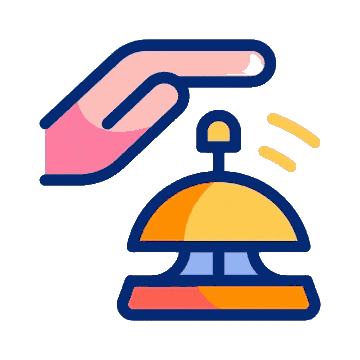

<ion-header
  class="ion-no-border ion-text-center header-mobile"
  [class.bell-present]="client"
  *ngIf="!isAdmin() && !showMenu"
>
  <ion-toolbar>
    <ion-buttons slot="start" *ngIf="showBackButton">
      <ion-button (click)="goBack()">
        <ion-icon slot="icon-only" name="arrow-back"></ion-icon>
      </ion-button>
    </ion-buttons>
    <ion-buttons slot="end" *ngIf="client">
      <ion-button>
        
      </ion-button>
    </ion-buttons>
    <ion-title
      [ngClass]="{ logo_name_header: showBackButton }"
      class="logo__name"
      [class.without-bell]="!client"
      >TGD<span class="point">net.</span></ion-title
    >
  </ion-toolbar>
</ion-header>
